Doctor
Doctor portal
Run your clinic's appointments, walk-in patients, records and prescriptions, and enrol patients on a Patient Support Programme, all from one portal.
For doctors, and for the assistants who work at their clinics.
Click the screenshot to enlarge it.
Before you start
The doctor portal is a web page. It works on a computer, a tablet or a phone.
- Your sign-in. You sign in with your phone number and your password.
- Your assistants. An assistant uses the same portal with their own phone number and a password you set for them. They see only the tasks you allow (see Assistants, below).
- Two parts, one menu. The menu on the left holds your practice — appointments, walk-in patients, patients, clinics, prescriptions — and the Patient Support Programme pages: Coupon balance, Give coupon and Cases.
Sign in
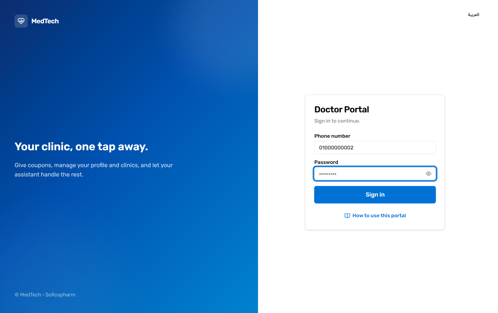
- 1Phone number — your mobile number.
- 2Password — your password.
- 3Click the eye to show the password while you type it.
- 4Sign in opens the portal.
- 5Switch the screen between English and العربية at any time.
- 6How to use this portal opens this guide.
Find your way around
The portal opens on Coupon balance. The menu is always on the left.
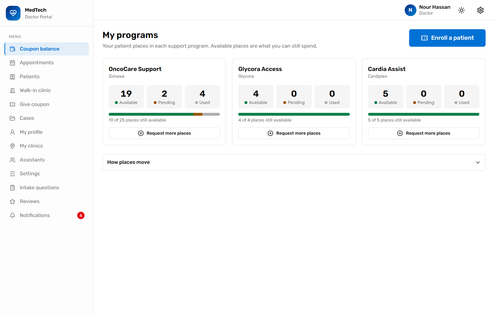
- 1Coupon balance — your places on each support programme.
- 2Appointments — your bookings. Most days start here.
- 3Give coupon — enrol a patient on a support programme.
- 4Notifications — your alerts. The red number counts the unread ones.
- 5Your name, and your role (Doctor or Assistant).
- 6Switch between a light and a dark screen.
- 7The settings menu: Language (English or العربية), User guide (opens this guide in a new tab) and Sign out. Always sign out on a shared computer.
| Menu | What it is for |
|---|---|
| Coupon balance | Your patient places on each support programme. |
| Appointments | Booking requests, the day's visits, the calendar. |
| Patients | Everyone who booked with you or walked into your clinic, with their records. |
| Walk-in clinic | Today's patients without an appointment. |
| Give coupon | Enrol a patient on a support programme. |
| Cases | The patients you enrolled and where each case stands. |
| My profile | What patients see about you, and your verified details. |
| My clinics | Your clinics, their hours, closures and fees. |
| Assistants | The people who help you (doctor only). |
| Settings | Booking rules and your prescription letterhead. |
| Intake questions | What patients answer when they book. |
| Reviews | What patients said after their visit. |
| Notifications | All your alerts, newest first. |
Appointments
See your appointments
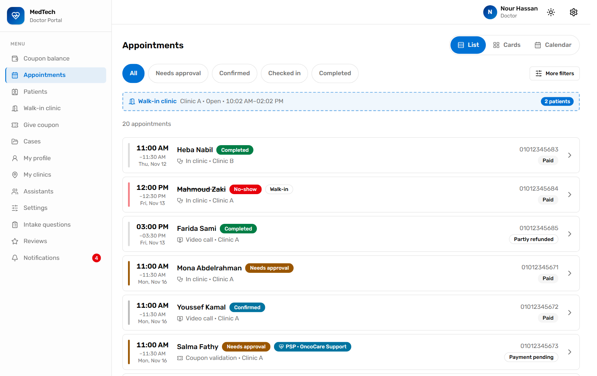
- 1Choose how to see them: List, Cards or Calendar.
- 2Show one stage only: All, Needs approval, Confirmed, Checked in or Completed.
- 3More filters — search by patient, or filter by date, clinic, visit type, how it was booked, or payment.
- 4Today's walk-in session, with the number of patients present. Click it to open Walk-in clinic.
- 5The stage of each appointment. Needs approval means the patient is waiting for your answer.
- 6PSP marks a booking linked to a support programme, with the programme's name.
Click any appointment to open it.
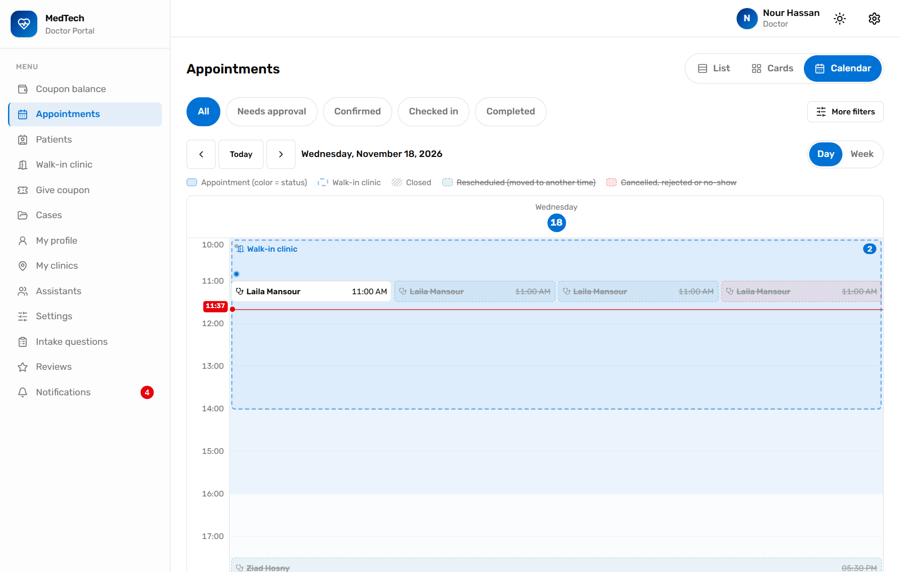
- 1Move to the previous or next day, or jump back with Today.
- 2Day or Week.
- 3The legend: the colour of an appointment shows its stage. Crossed-out entries were moved, cancelled, rejected or missed.
- 4A walk-in session is the dashed block, with the number of patients in it.
- 5The red line is the time now.
Answer a booking request
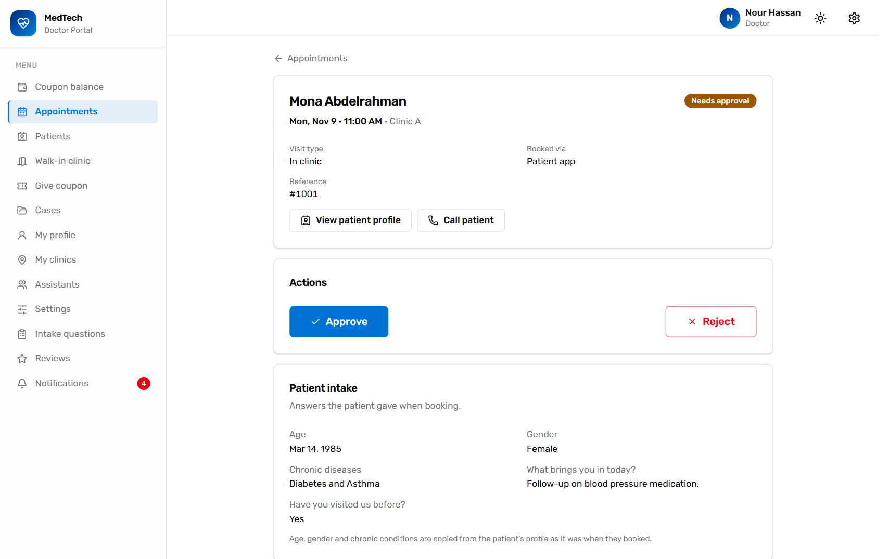
- 1Needs approval — the patient is waiting for you.
- 2View patient profile opens the patient's record.
- 3Call patient dials the patient's phone.
- 4Approve confirms the appointment.
- 5Reject declines it. You must give a reason.
- 6Patient intake — the answers the patient gave when booking.
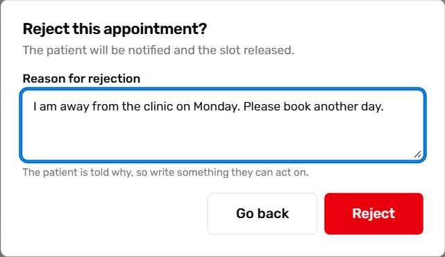
- 1Reject this appointment? The patient is told and the time is freed.
- 2Reason for rejection — write something the patient can act on.
- 3Go back closes the box without changing anything.
- 4Reject sends the rejection.
Move the appointment along
The buttons in Actions change with the stage of the appointment. You only ever see the buttons that apply now.
| Stage | Buttons you see |
|---|---|
| Needs approval | Approve, Reject |
| Confirmed | Check in when the patient arrives; Cancel appointment; Mark no-show |
| Checked in | Start consultation; Mark no-show if the patient left before being seen |
| In consultation | Complete visit |
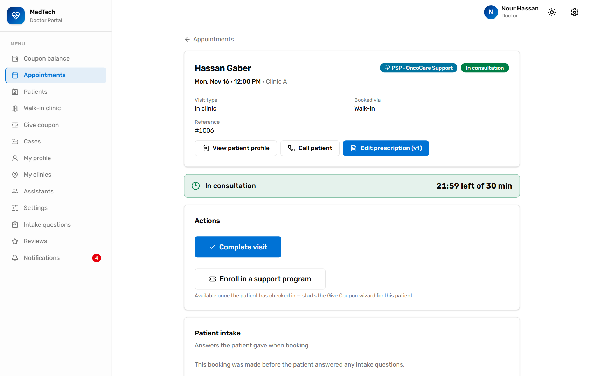
- 1This booking is linked to a support programme.
- 2The countdown of the visit: time left of the appointment length.
- 3Write prescription (or Edit prescription once one exists) — see Prescriptions, below.
- 4Complete visit ends the visit.
- 5Enroll in a support program — appears once the patient has checked in. It opens the enrolment for this patient.
Walk-in clinic
A walk-in session is one block of hours for patients without an appointment. You add each patient by phone number as they arrive.
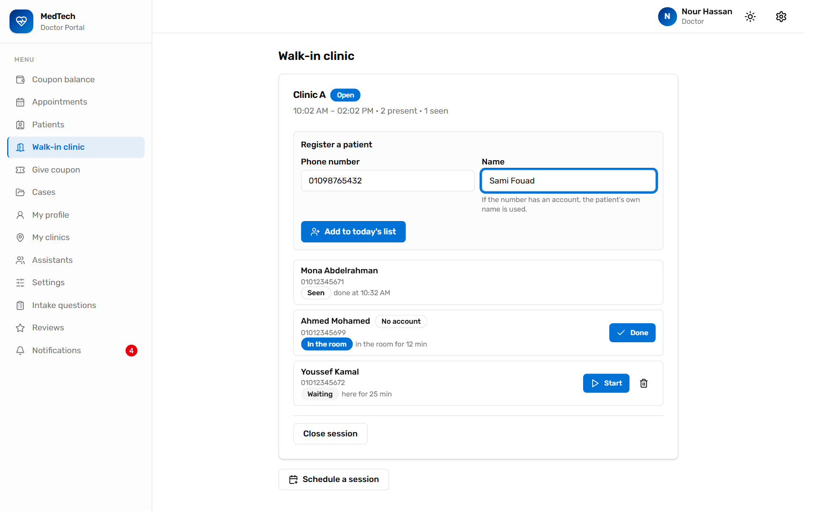
- 1The clinic and the session. Open means the session is running; under it you see how many are present and how many were seen.
- 2Phone number — the patient's mobile.
- 3Name — if the number already has an account, the patient's own name is used.
- 4Add to today's list puts the patient in the queue.
- 5Start calls a waiting patient into the room.
- 6Done ends the visit of the patient in the room.
- 7Close session ends the walk-in block.
- Each patient shows Waiting, In the room or Seen, and for how long.
- The bin next to a waiting patient removes them from the list.
- No account means the number has no MedTech account yet. The visit joins their record if they sign up later.
- While a patient is in the room, Prescription opens their prescription.
- Schedule a session sets up a walk-in block for another day. It shows on your calendar.
- If no session is open today, the page offers Open today's session: choose the times and press Open session.
Patients
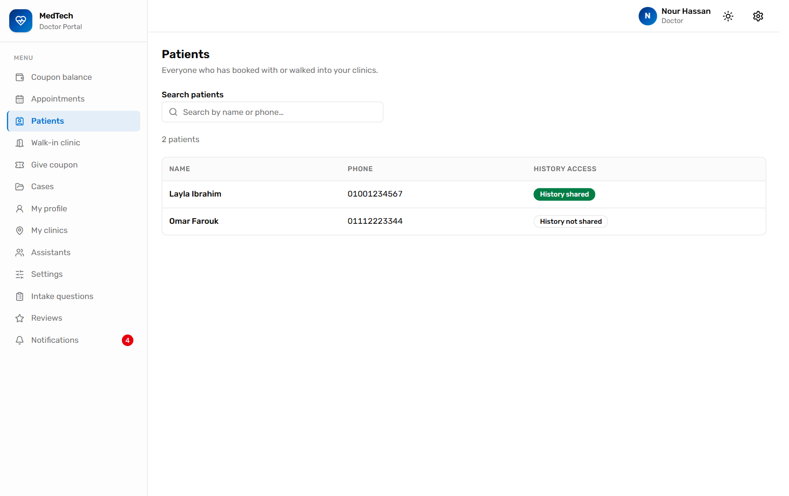
- 1Search patients by name or phone number.
- 2Click a patient to open their record.
- 3History shared — the patient lets you see their medical history.
- 4History not shared — you see only their basic details and their appointments with you. The patient can give access from their app.
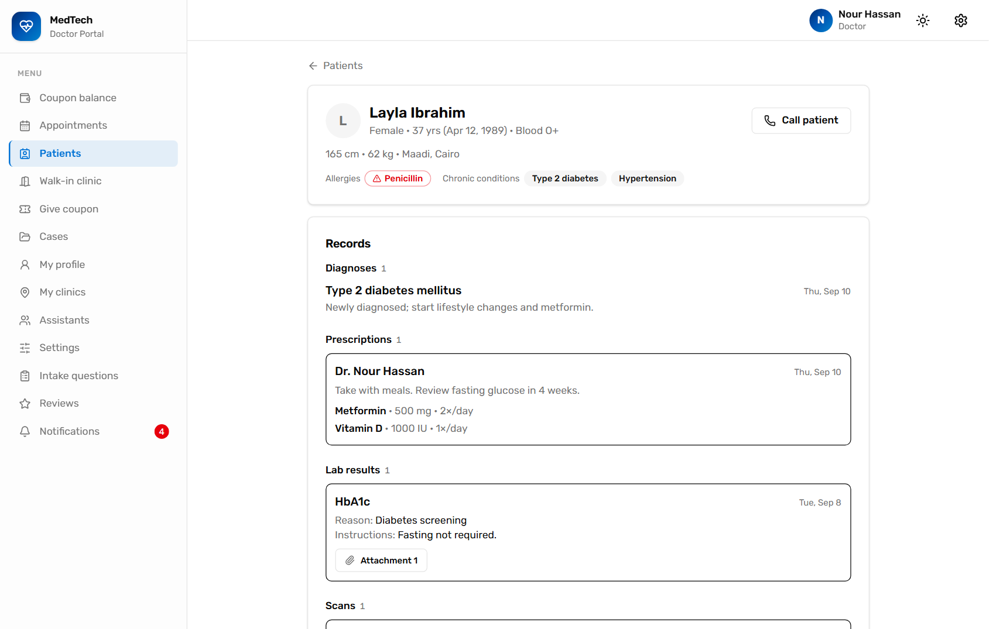
- 1Name, age, sex, blood group, height, weight and city.
- 2Allergies (in red) and Chronic conditions.
- 3Call patient.
- 4Records — diagnoses, prescriptions, lab results, scans, documents and readings.
- 5Each prescription shows the doctor, the date, the instructions and the medicines.
Further down, Appointments with you lists every visit; click one to open it.
Prescriptions
Only a doctor can write a prescription. Open it from the appointment (Write prescription) once the patient has checked in, or from Prescription in the walk-in list.
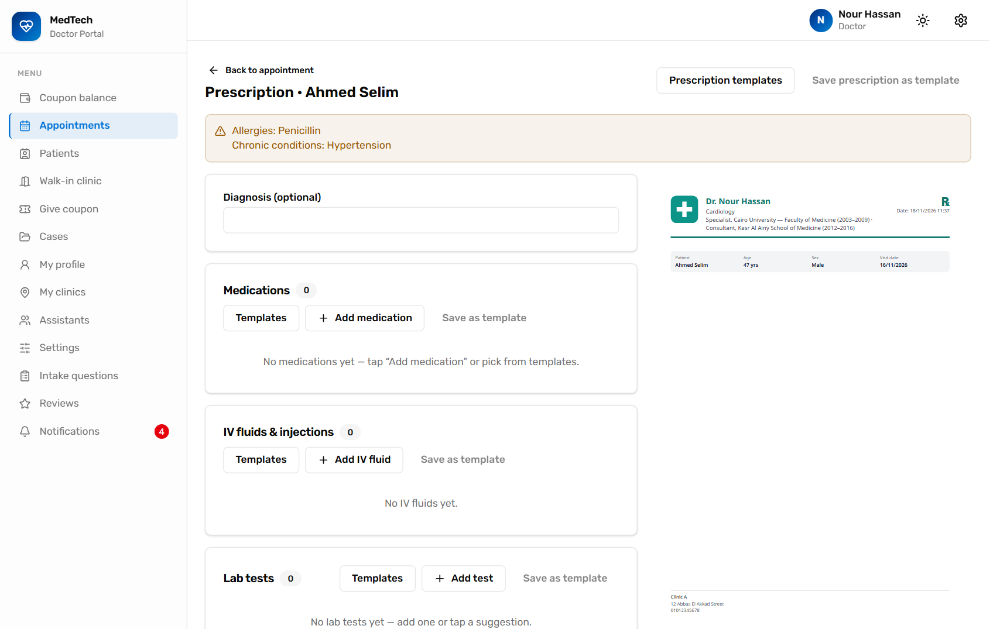
- 1The prescription is for this patient and this visit.
- 2The patient's allergies and chronic conditions, as a reminder.
- 3Diagnosis (optional).
- 4Add medication. The other sections work the same way: IV fluids & injections, Lab tests and Radiology.
- 5Prescription templates — reuse a whole prescription you saved before. Each section also has its own Templates and Save as template.
- 6The live preview of the printed prescription, on your letterhead.
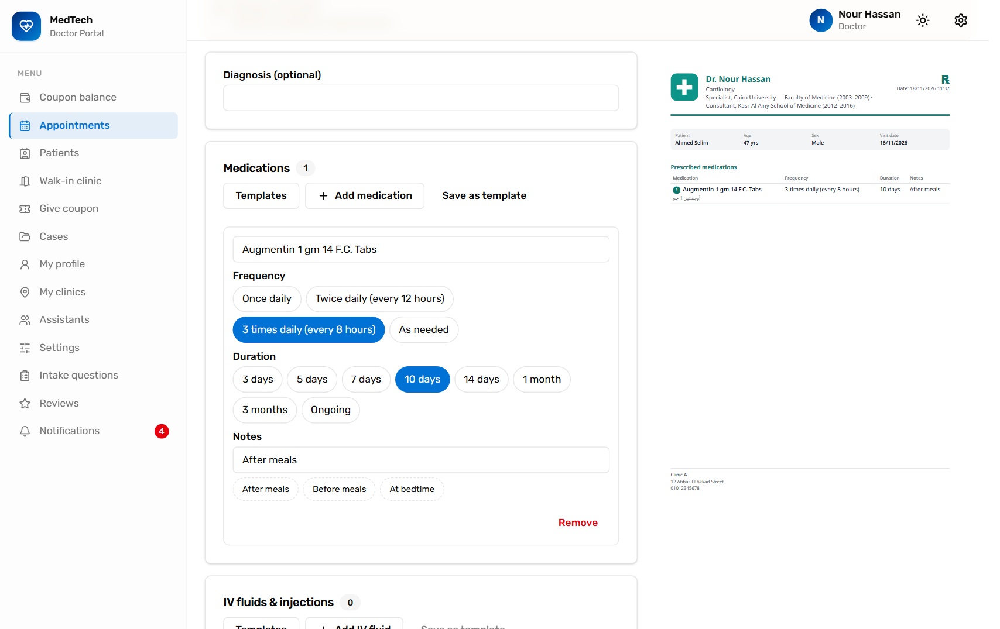
- 1Type a few letters of the medicine and pick it from the list.
- 2Frequency — tap one choice.
- 3Duration — tap one choice.
- 4Notes — tap After meals, Before meals or At bedtime, or type your own.
- 5The preview updates as you go.
Lab tests and scans offer Suggested — tap to add chips. At the bottom, add General instructions for the patient and a Follow-up date (tap 1 week, 1 month…). Then press Save prescription.
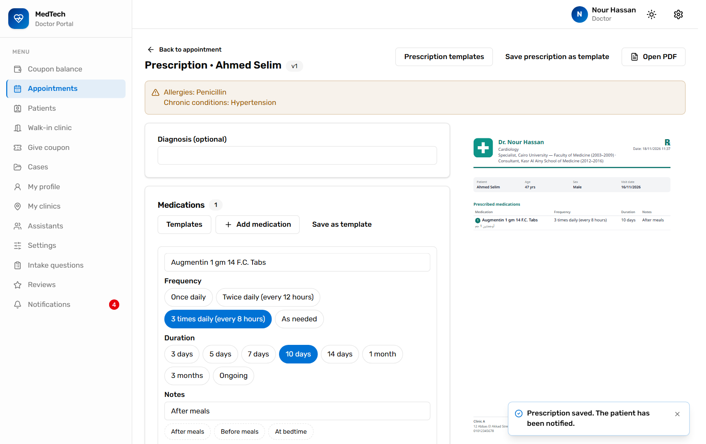
- 1The version number. Every save after the first makes a new version.
- 2Open PDF — the printable prescription. Print or download it from there.
- 3Back to appointment.
When you save, the patient is told. Preparing PDF… shows for a few seconds before Open PDF appears. If the PDF cannot be made, the screen says so and offers Print and Try again.
My clinics
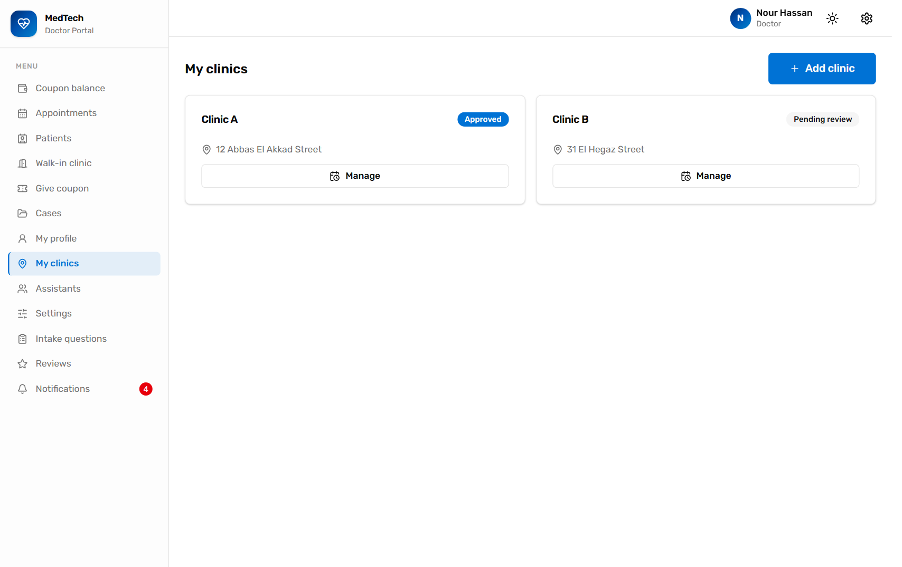
- 1Add clinic — a new clinic is reviewed by MedTech before patients can book it.
- 2Each clinic has a card. Click it, or Manage, to open it.
- 3Approved — patients can book this clinic.
- 4Pending review — MedTech has not approved it yet.
- 5Manage opens the clinic's details and hours.
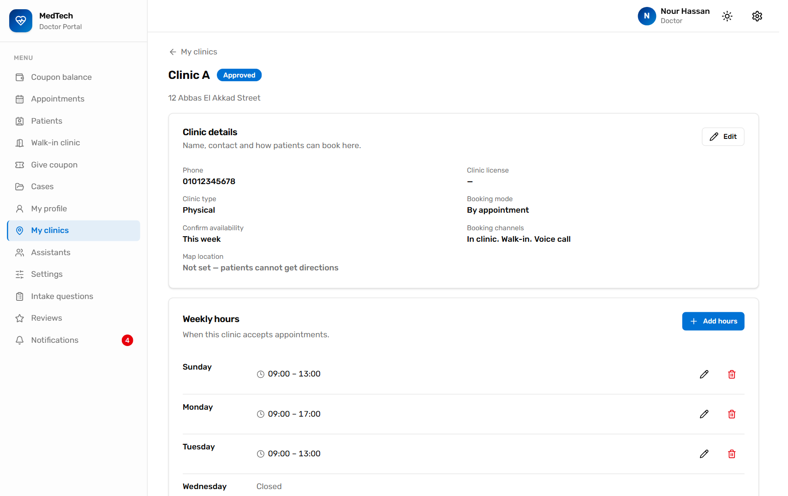
- 1Edit changes the name, phone, address and how patients can book here.
- 2Add hours adds opening times.
- 3The pencil changes the hours of one day; the bin next to it removes them.
- 4Closed — no hours on that day.
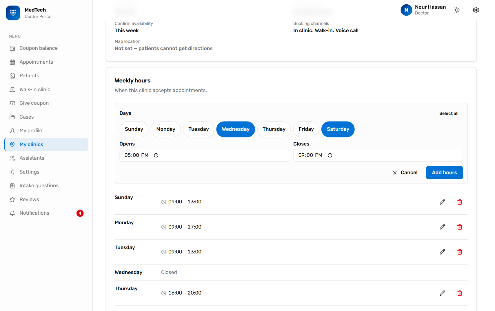
- 1Days — tap each day these hours apply to.
- 2Select all picks the whole week.
- 3Opens — the start time.
- 4Closes — the end time.
- 5Add hours saves them. Hours that overlap another shift on the same day are refused, with a message.
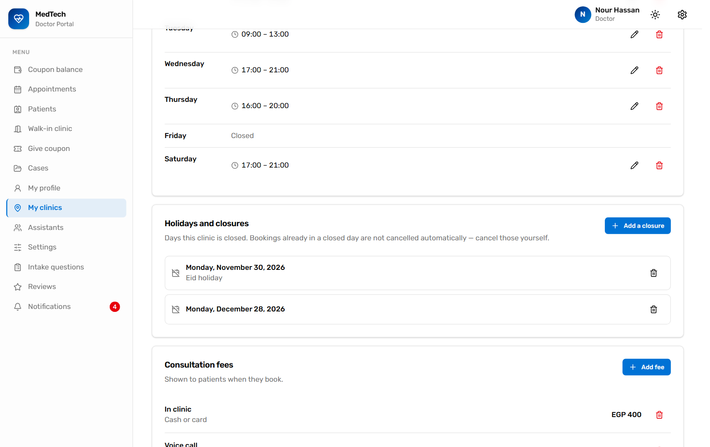
- 1Holidays and closures — days the clinic is closed.
- 2Add a closure — pick the date and, if you like, a reason.
- 3Consultation fees — shown to patients when they book.
- 4Add fee — the visit type, the amount and how it is paid.
At the bottom, Remove clinic stops new bookings. It is refused while the clinic still has upcoming appointments. A licence change goes through a request on your profile.
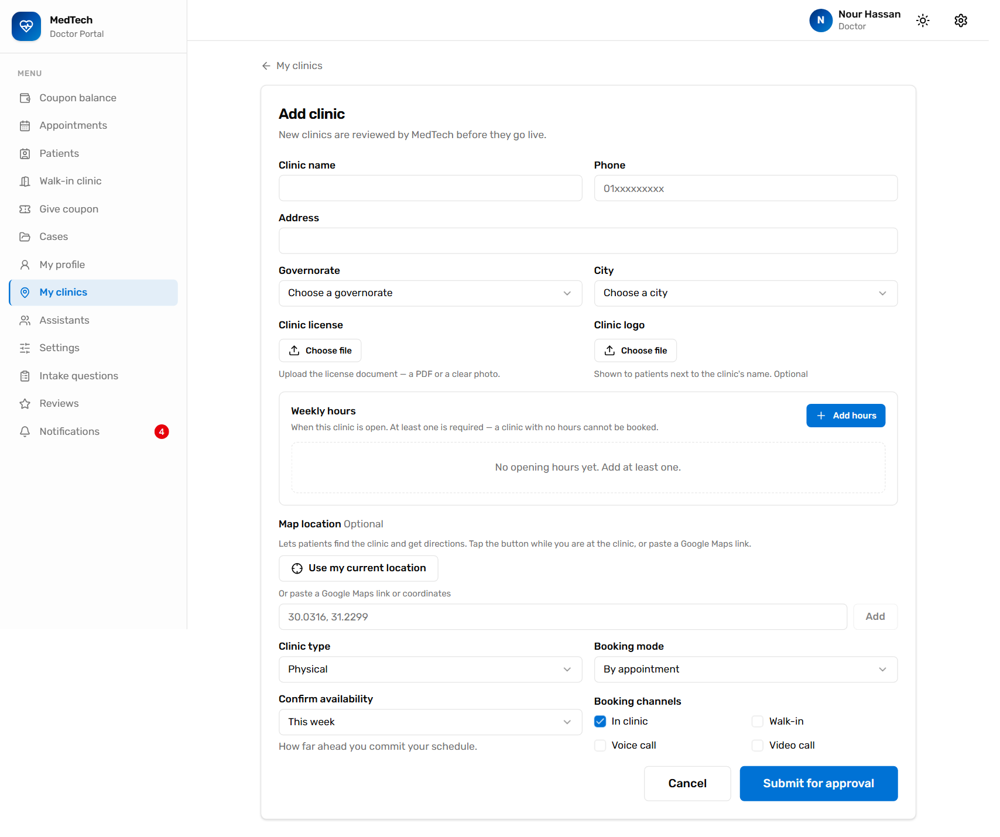
- 1Clinic name, Phone and Address.
- 2Governorate, then City.
- 3Clinic license — upload the licence document. It is required. The Clinic logo is optional.
- 4Add hours — at least one opening time is required.
- 5Map location (optional) — tap Use my current location at the clinic, or paste a Google Maps link.
- 6Submit for approval sends the clinic to MedTech.
Intake questions
Patients answer these questions when they book. Their answers appear on the appointment under Patient intake.
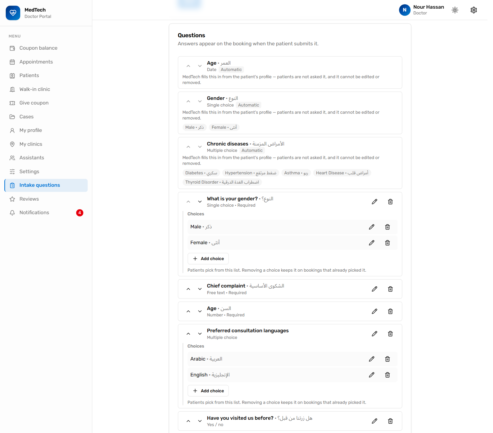
- 1Questions — the list, in the order patients see it.
- 2Automatic — MedTech fills these in from the patient's profile (age, gender, chronic diseases). Patients are not asked them, and you cannot change them.
- 3The arrows move a question up or down. The pencil edits it; the bin removes it.
- 4Add choice adds an answer to a choice question.
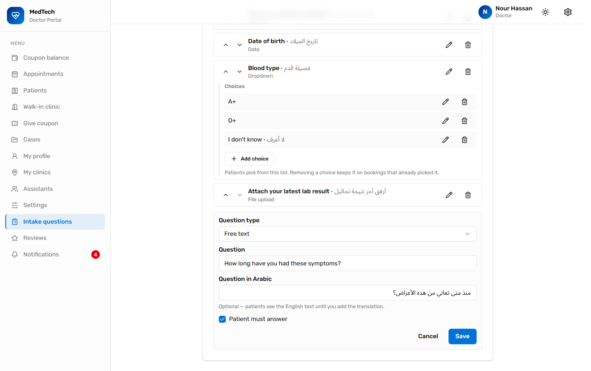
- 1Question type — Free text, Number, Yes / no, Date, Single choice, Multiple choice, Dropdown or File upload.
- 2Question — in English.
- 3Question in Arabic — optional; patients see the English text until you add it.
- 4Patient must answer makes the question required.
- 5Save. For a choice question, add the choices after you save it.
Settings
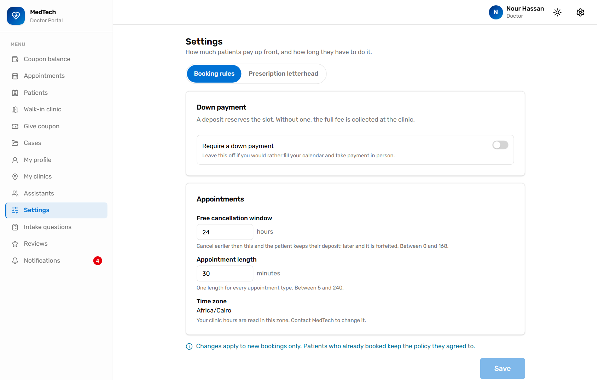
- 1Booking rules and Prescription letterhead are the two tabs.
- 2Require a down payment — a deposit reserves the slot. When it is on, you also set the deposit and the time the patient has to pay.
- 3Free cancellation window — cancel earlier than this and the patient keeps the deposit.
- 4Appointment length — one length for every appointment type.
- 5Time zone — your clinic hours are read in this zone. Contact MedTech to change it.
- 6Save.
Changes apply to new bookings only. Patients who already booked keep the policy they agreed to.
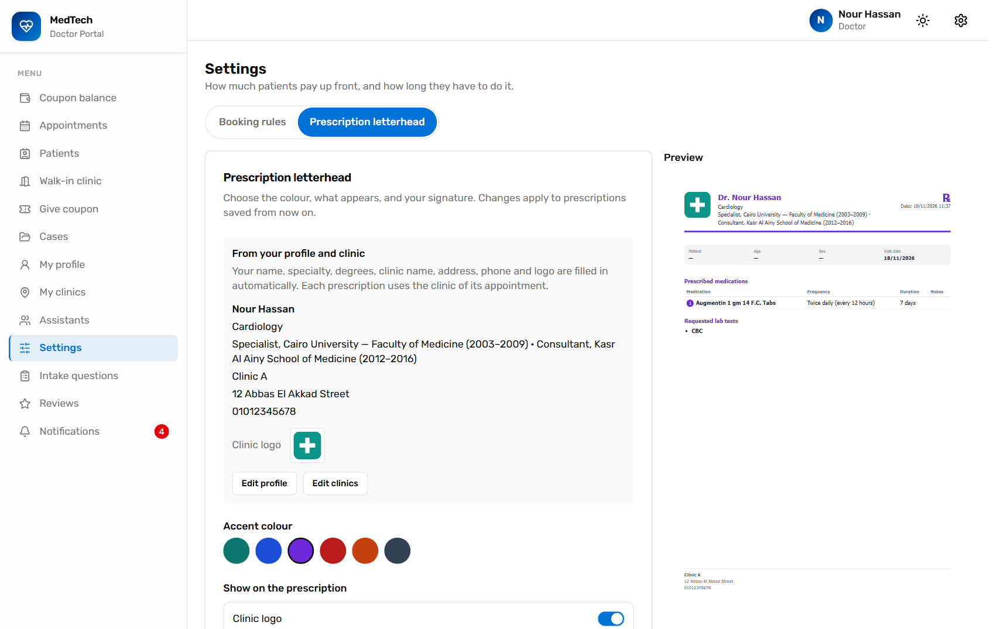
- 1From your profile and clinic — your name, specialty, degrees, clinic name, address, phone and logo are filled in for you. Each prescription uses the clinic of its appointment.
- 2Edit profile / Edit clinics — change those details at the source.
- 3Accent colour — the colour of the letterhead.
- 4Show on the prescription — switch each item on or off.
- 5The preview shows the result.
To sign your prescriptions, switch on Signature under Show on the prescription, then upload an image of your signature or press Draw signature. Press Save letterhead. Changes apply to prescriptions saved from now on.
My profile
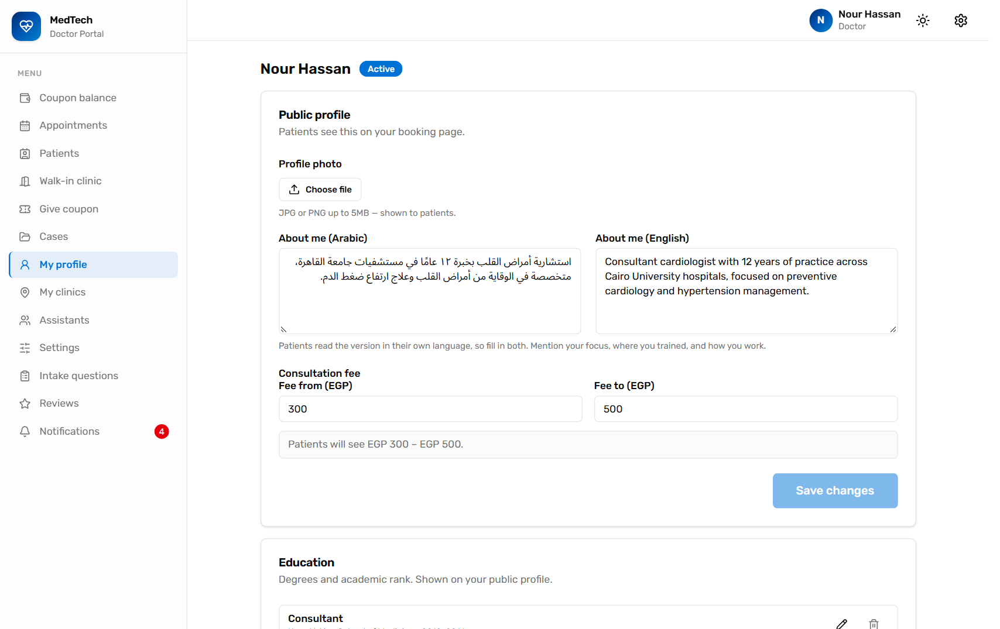
- 1Your name and account status.
- 2Profile photo — JPG or PNG up to 5 MB, shown to patients.
- 3About me — fill in both Arabic and English; patients read their own language.
- 4Consultation fee — a range from / to, shown to patients. Leave both empty to hide it.
- 5Save changes.
Below: Education and Experience (add, edit or remove each line), and Verification documents — upload your national ID, syndicate card, practice licence and degree certificate for MedTech to review.
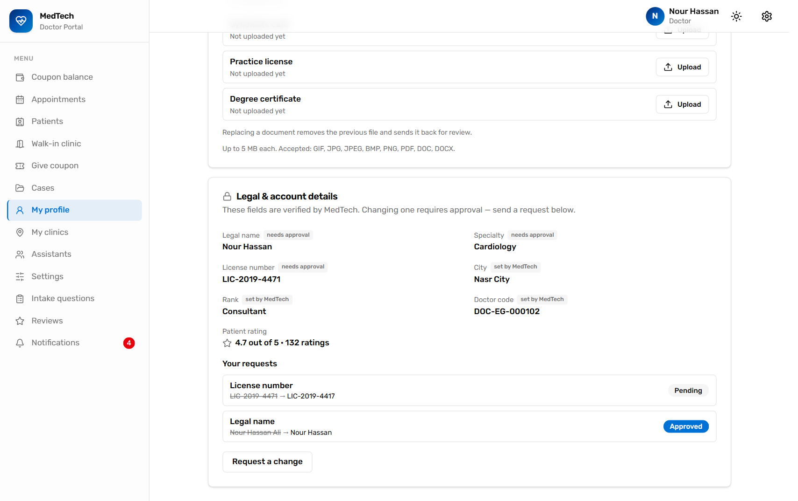
- 1Legal & account details — verified by MedTech.
- 2needs approval — you can ask to change it.
- 3set by MedTech — only MedTech changes it.
- 4Your requests — the changes you asked for, with their state (Pending, Approved).
- 5Request a change — choose the detail, enter the corrected value and press Send request. Your current details stay until MedTech approves.
Notifications
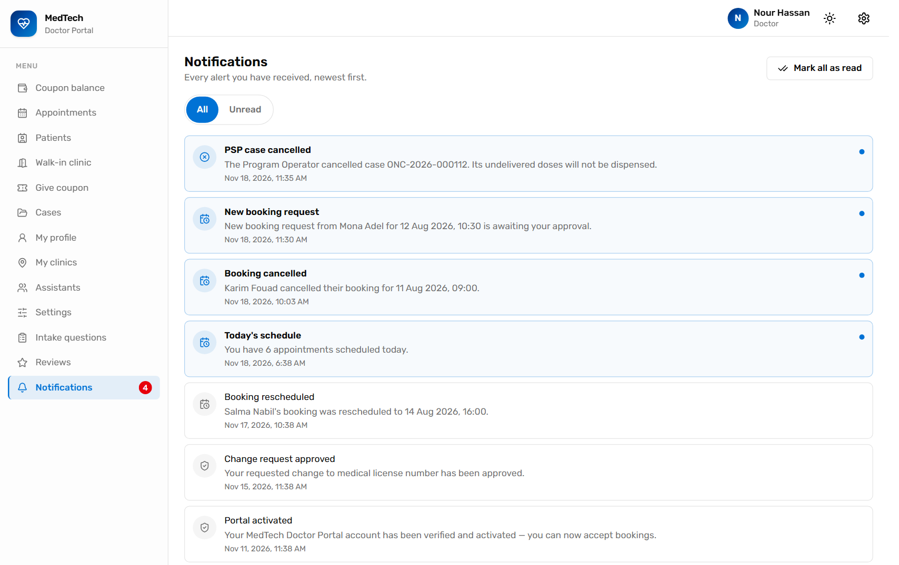
- 1All — every alert, newest first.
- 2Unread — only the ones you have not opened.
- 3Mark all as read clears the unread dots.
You are told, for example, about new booking requests, cancellations, reschedules, today's schedule, approved change requests and changes to your support programme cases.
Patient Support Programme: your places
A support programme gives you a number of patient places. Enrolling one patient spends one place.
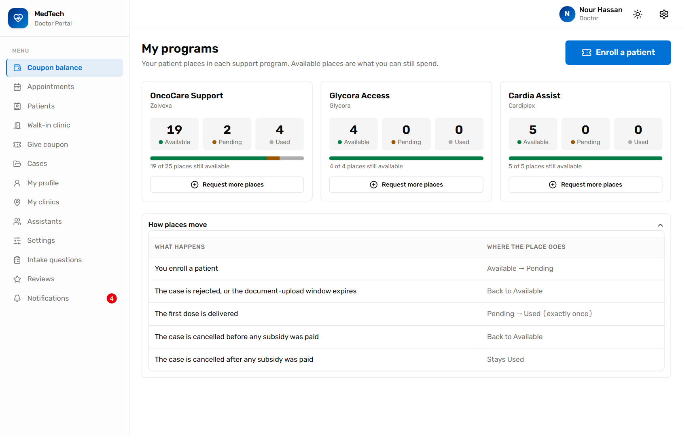
- 1One card per programme, with the medicine under its name.
- 2Available — places you can still spend.
- 3Pending — patients enrolled who have not had their first dose yet.
- 4Used — patients who received their first dose.
- 5Request more places — ask the programme for more.
- 6How places move — open it to see the rules.
- 7Enroll a patient starts an enrolment.
| What happens | Where the place goes |
|---|---|
| You enrol a patient | Available → Pending |
| The case is rejected, or the document-upload window expires | Back to Available |
| The first dose is delivered | Pending → Used |
| The case is cancelled before any subsidy was paid | Back to Available |
| The case is cancelled after a subsidy was paid | Stays Used |
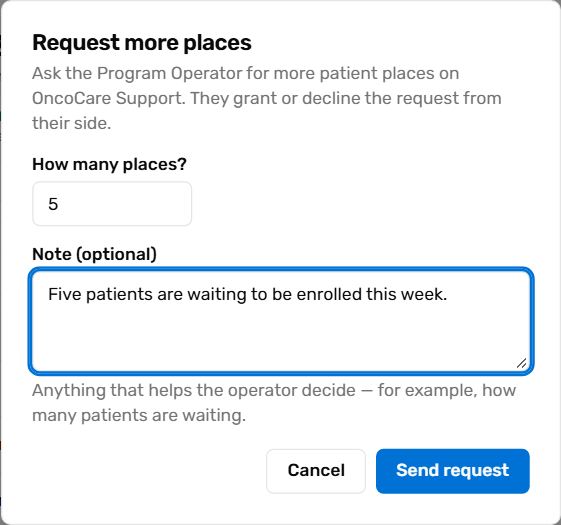
- 1Request more places — the Program Operator grants or declines it.
- 2How many places? — between 1 and 100.
- 3Note (optional) — for example, how many patients are waiting.
- 4Send request.
Enrol a walk-in patient
Use this for a patient in front of you who has no MedTech app account yet. Open Give coupon (or Enroll a patient on the balance page).
1. Choose how, and the programme
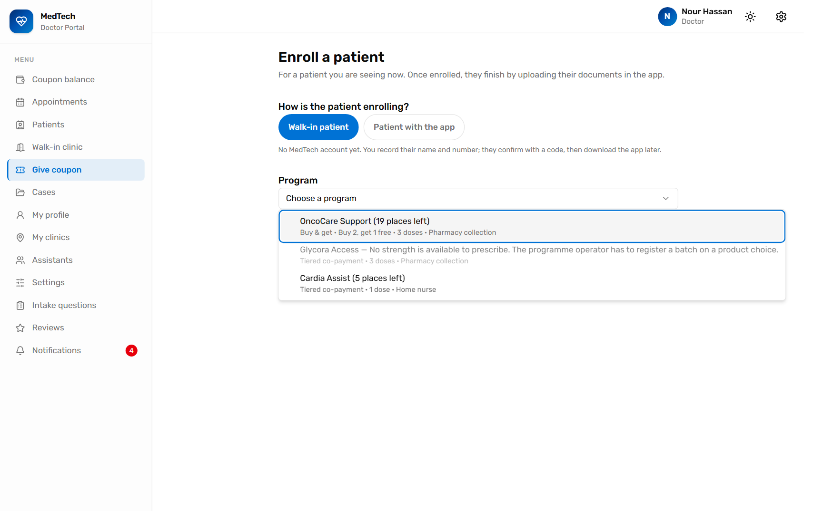
- 1Walk-in patient — no MedTech account yet.
- 2Patient with the app — see the next part.
- 3Each programme shows how many places you have left, and its details (payment model, offer, doses, how the medicine is handed over).
- 4A programme you cannot use right now is greyed out, with the reason.
2. Confirm who the patient is
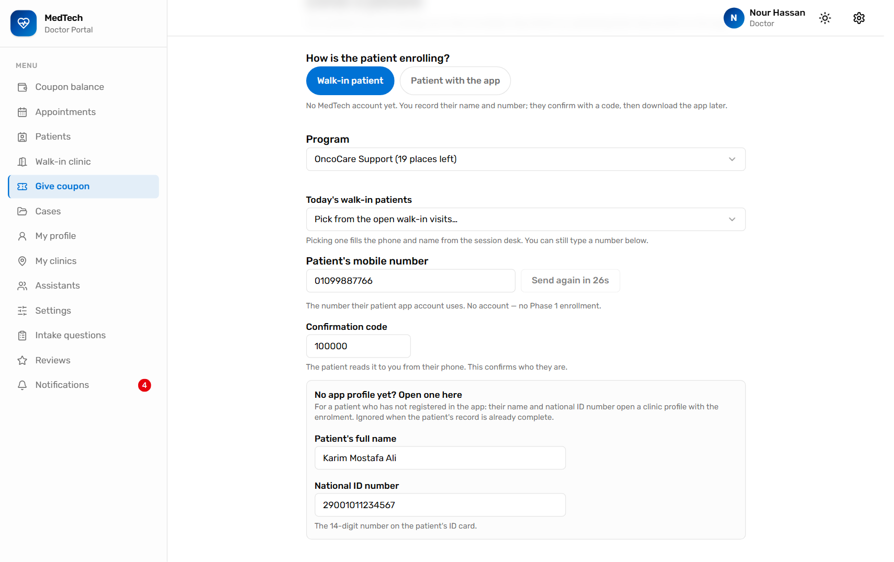
- 1Today's walk-in patients — pick the patient from today's walk-in list to fill in their phone and name. Optional.
- 2Patient's mobile number — the patient's own mobile; the code is sent to it. If the patient already uses the app, enter the number their account uses. Then press Send code.
- 3The code can be sent again after the countdown.
- 4Confirmation code — the patient reads you the 6-digit code from their phone.
- 5Patient's full name.
- 6National ID number — type the 14 digits on the patient's ID card.
The box No app profile yet? Open one here opens a profile for a patient who has not registered in the app. If the patient's record is already complete, it is ignored.
3. Fill in the enrolment form
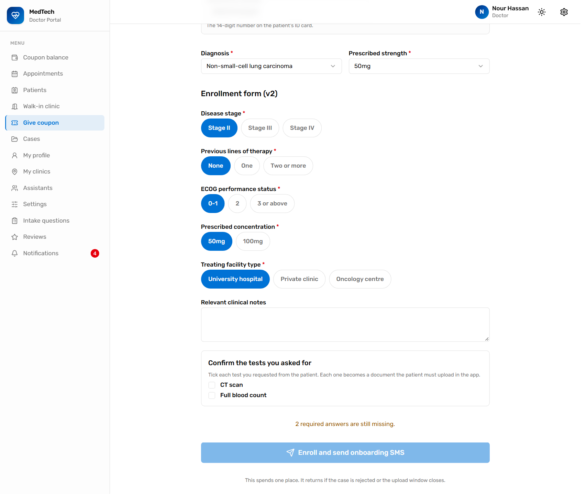
- 1Diagnosis — pick from the programme's list.
- 2Prescribed strength.
- 3Tap one answer for each question. A red star means required.
- 4Confirm the tests you asked for — tick each one. Each becomes a document the patient uploads in the app.
- 5What is still missing. The button stays grey until nothing is.
- 6Enroll and send onboarding SMS.
4. Done
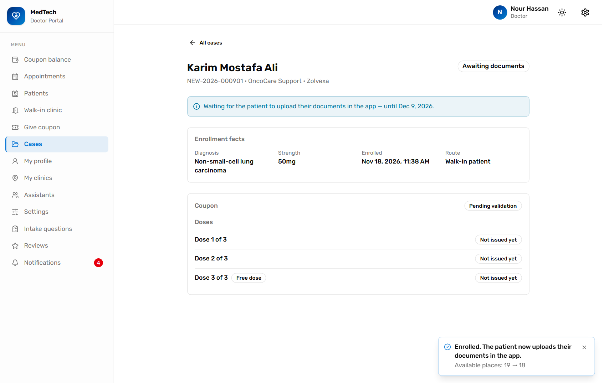
- 1The patient's case opens.
- 2The case reference.
- 3Awaiting documents — the patient now uploads their documents in the app.
- 4The deadline for the upload.
- 5The confirmation, with your available places before and after.
Enrol a patient who has the app
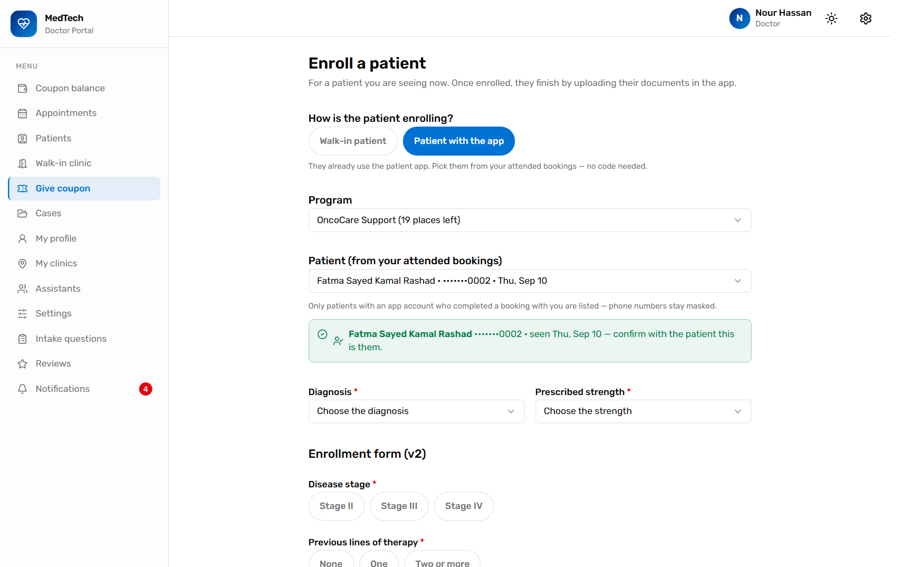
- 1Patient with the app.
- 2Program.
- 3Patient (from your attended bookings) — only patients with an app account who came to a booking with you are listed. Phone numbers stay hidden.
- 4Check the name with the patient in the room. No code is needed.
Then fill in the form and press Enroll and send onboarding SMS, as above.
Enrol from an appointment
Once a patient has checked in, the appointment shows Enroll in a support program.
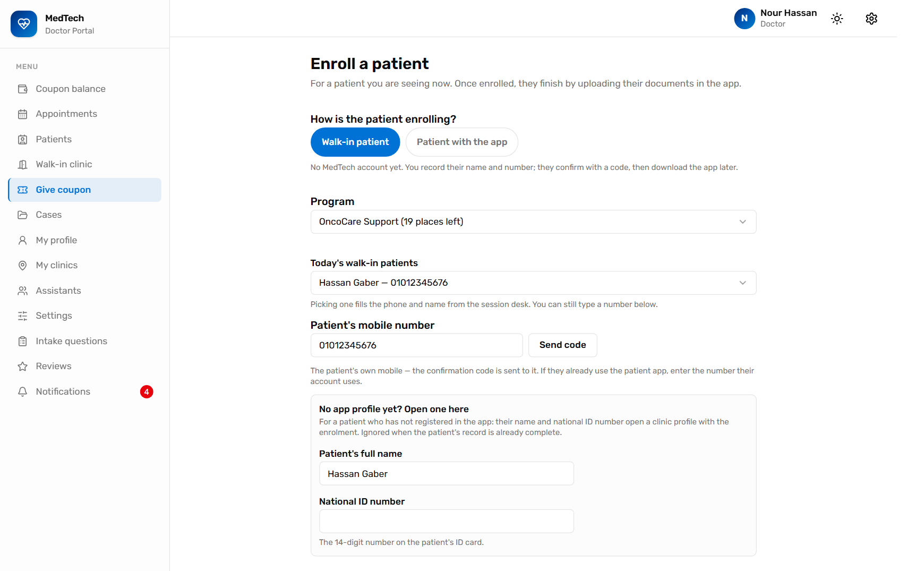
- 1The programme is already chosen when the booking was linked to one.
- 2The walk-in patient is already picked…
- 3…with their mobile number…
- 4…so you press Send code and enter the patient's code.
- 5Their name is filled in.
- 6Type the National ID number from the card.
From an app patient's appointment that is in consultation, the patient is fixed and cannot be changed (and so is the programme, when the booking belongs to one).
Your cases
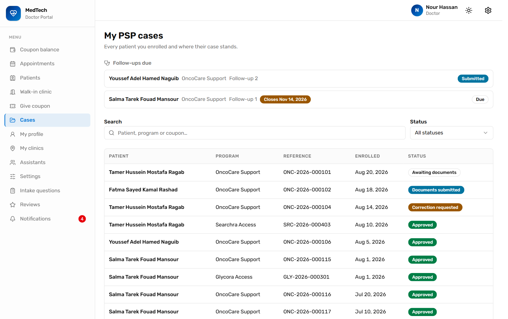
- 1Follow-ups due — cases waiting for your follow-up form.
- 2Due — submit it before the date shown. Submitted means it is waiting for review.
- 3Search by patient, programme or coupon.
- 4Status — show one stage only.
- 5The stage of each case. Click a row to open the case.
| Stage | What it means |
|---|---|
| Awaiting documents | The patient still has to upload their documents in the app. |
| Documents submitted | The programme team will review them. |
| Under validation | The programme team is reviewing the case. |
| Correction requested | The patient must fix something in the app. |
| Approved | The coupon is active. The patient collects each dose. |
| Rejected | Final. To try again, enrol the patient again — that starts a new case. |
| Closed — window expired | The patient did not upload in time. The place came back to you. |
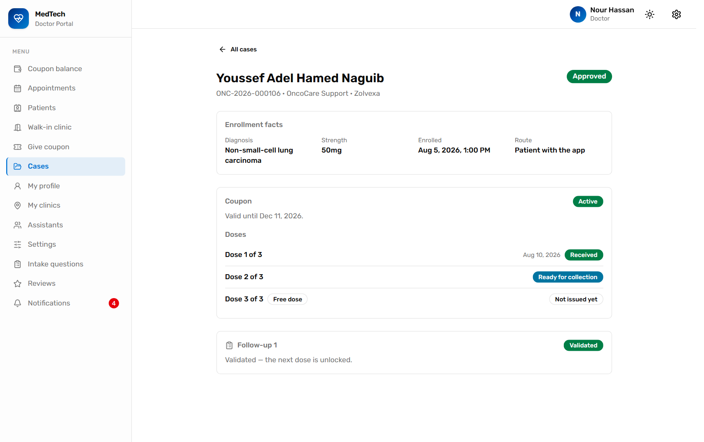
- 1The patient, the case reference, the programme and the medicine.
- 2Enrollment facts — diagnosis, strength, date and how the patient was enrolled.
- 3Coupon — its state and the last day it is valid.
- 4Doses — each dose and where it stands, for example Received, Ready for collection or Not issued yet. Free dose marks a dose the patient does not pay for.
- 5The follow-up and its result.
The case page is for reading. The programme team validates and approves the case.
Submit a follow-up
Open a Due follow-up from Follow-ups due, then press Submit follow-up.
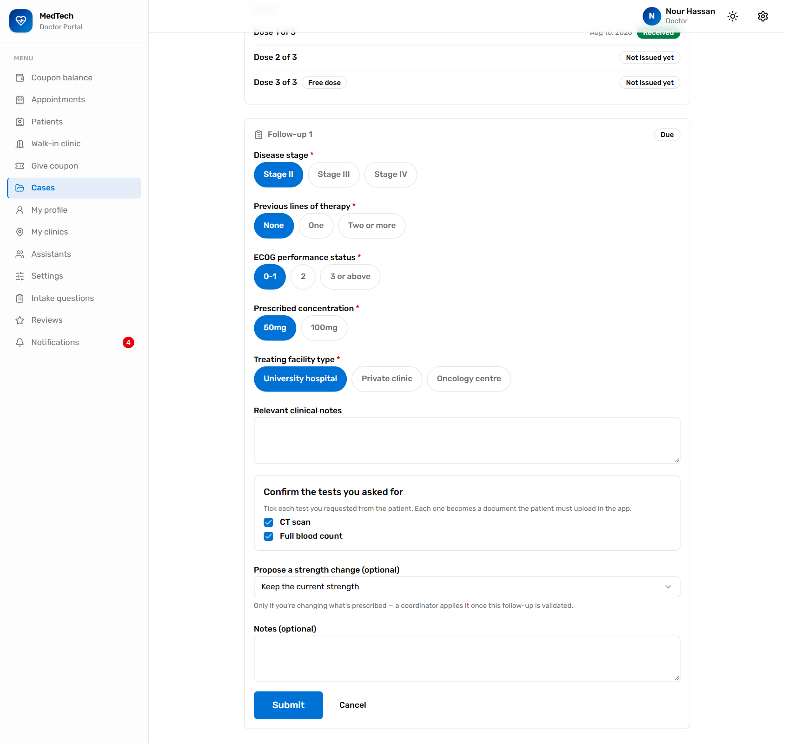
- 1Follow-up 1 — the number of the follow-up.
- 2Answer the questions, as in the enrolment form, and tick the tests.
- 3Propose a strength change (optional) — only if you change what is prescribed. The coordinator applies it once the follow-up is validated.
- 4Submit. The coordinator reviews it before the next dose opens.
Assistants
An assistant helps you run one of your clinics. Only you, the doctor, can add, change or remove an assistant.
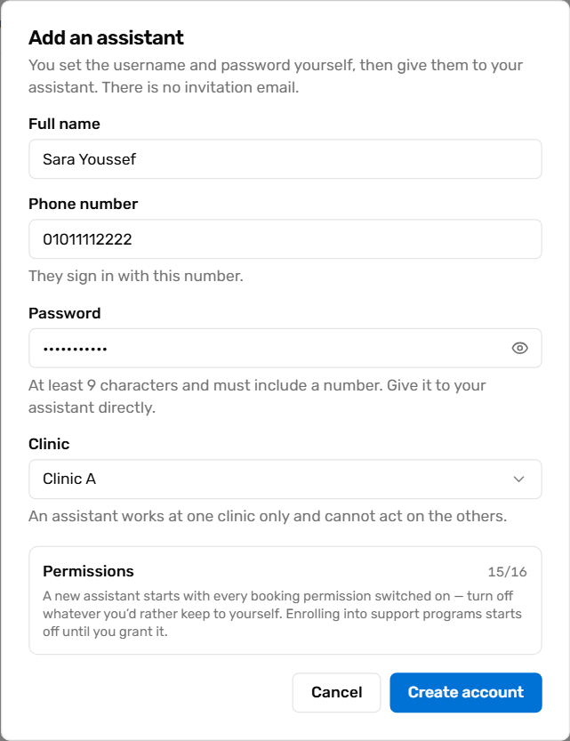
- 1Full name.
- 2Phone number — the assistant signs in with it.
- 3Password — at least 9 characters, with a number. Give it to your assistant yourself; no e-mail is sent.
- 4Clinic — an assistant works at one clinic only.
- 5Permissions — click to open the list of switches.
A new assistant starts with every booking permission on, and programme enrolment off. Press Create account; the assistant appears in the list.
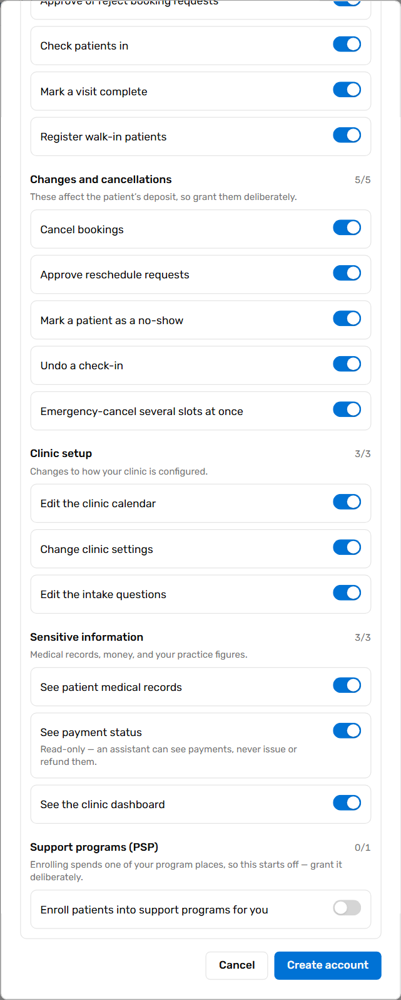
- 1The assistant's name and phone number. Active means they can sign in.
- 2The clinic they work at.
- 3Permissions — click to open or close the switches. The count shows how many are on.
- 4Each group is one kind of work: Front desk, Changes and cancellations, Clinic setup, Sensitive information and Support programs (PSP). Payments are always view-only for an assistant.
- 5Enroll patients into support programs for you starts off, because enrolling spends your places. Switch it on only if you want this assistant to enrol.
- 6Save applies your changes; Cancel drops them.
- 7The bin removes the assistant. They lose access at once.
What an assistant can and cannot do
| Task | Assistant |
|---|---|
| Approve or reject booking requests | Only with Approve or reject booking requests |
| Check patients in | Only with Check patients in |
| Start and complete a visit | Only with Mark a visit complete |
| Cancel, mark a no-show, emergency cancel | Only with the matching switch under Changes and cancellations |
| Run the walk-in list | Only with Register walk-in patients |
| Change the booking rules | Only with Change clinic settings — otherwise view only |
| See intake answers and medical records | Only with See patient medical records |
| See payments | Only with See payment status, and never refund |
| Enrol a patient on a support programme, or ask for more places | Only with Enroll patients into support programs for you |
| Write or edit a prescription | Never — doctors only |
| Change the prescription letterhead | Never |
| Manage assistants | Never |
The other switches (the calendar, the intake questions, reschedule requests, undoing a check-in, the clinic dashboard) work the same way: the assistant can do only what you switch on.
This is what an assistant sees without some permissions:
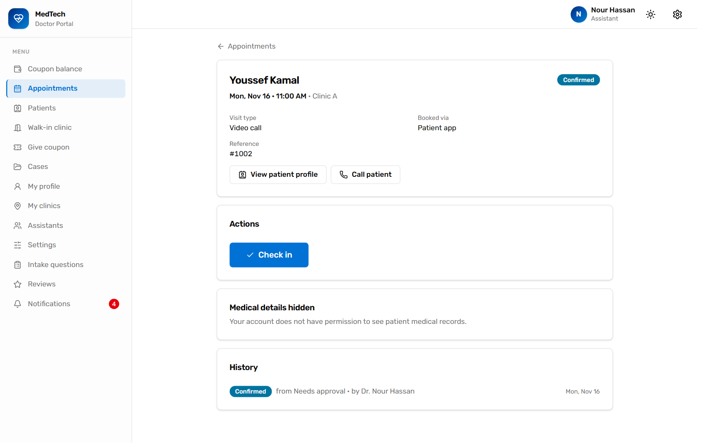
- 1The top bar says Assistant.
- 2Only the buttons the assistant is allowed. Here: Check in.
- 3Medical details hidden — this assistant may not see medical records. Payments are not shown either.
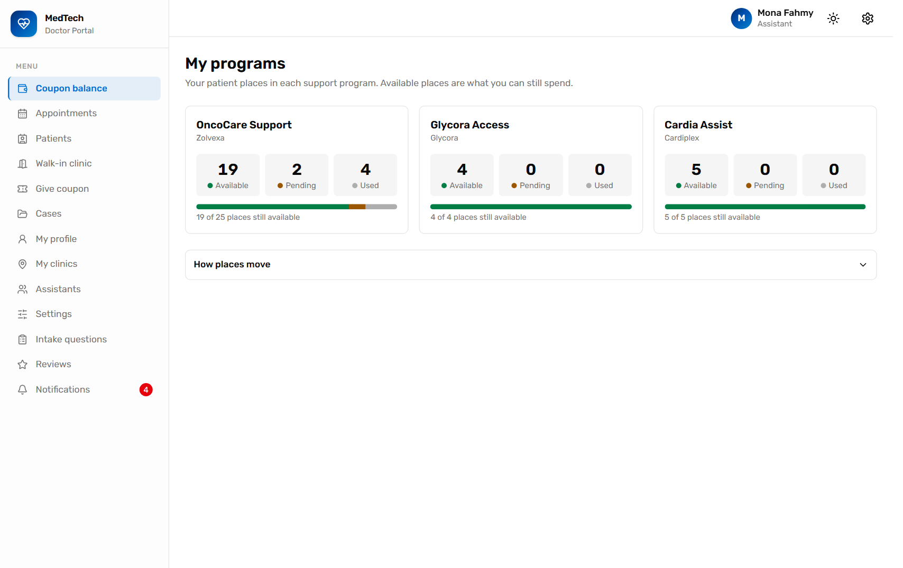
- 1The programme cards…
- 2…and the counters are shown, but there is no Enroll a patient or Request more places.
- 3Give coupon opens a message saying the doctor has not switched this permission on.
Quick answers
I closed the page in the middle of a form. Nothing was saved. Start again.
A patient cannot be enrolled — no places left. Use Request more places on Coupon balance.
The patient's code does not arrive. Check the mobile number, wait for the countdown, then press Send again.
My new clinic does not appear for patients. It must be Approved by MedTech, and it needs opening hours.
My assistant cannot see a button. Open Assistants, open their Permissions, switch on the task and press Save.
Where do I print a prescription? Save it, then press Open PDF and print from there.